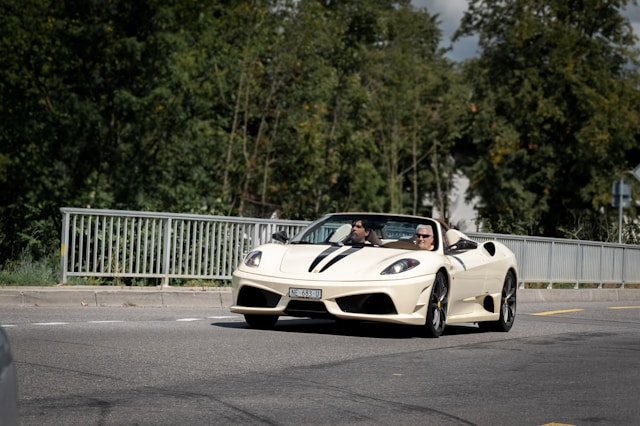
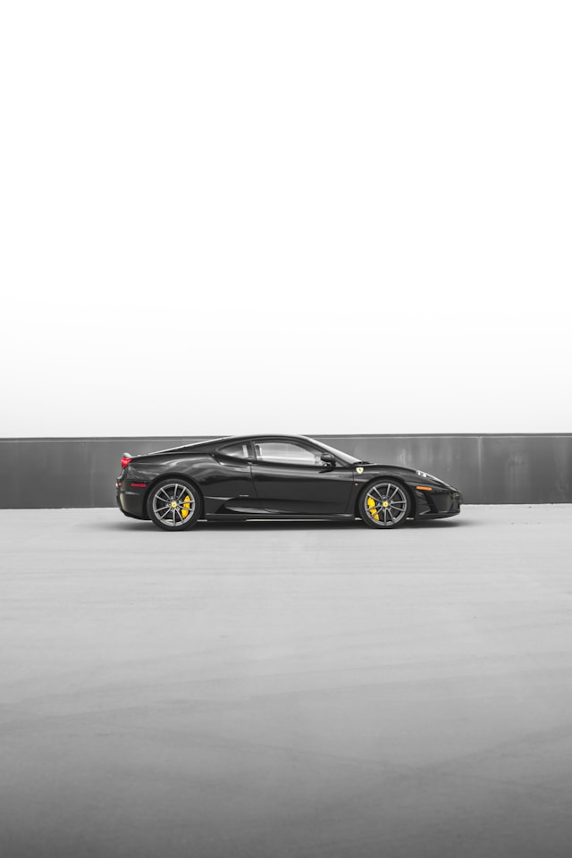

Ferrari F430 Variants
The Ferrari F430 was available in two main variants: the F430 Spider convertible and the high-performance F430 Scuderia. The Spider offered open-top driving while maintaining the coupe's performance, while the Scuderia was a lighter, more powerful version developed with Michael Schumacher's input as a more track-focused variant.
 